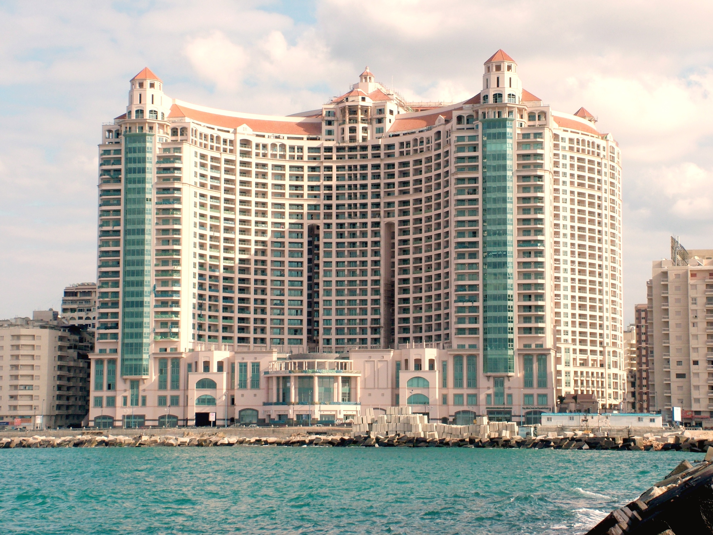
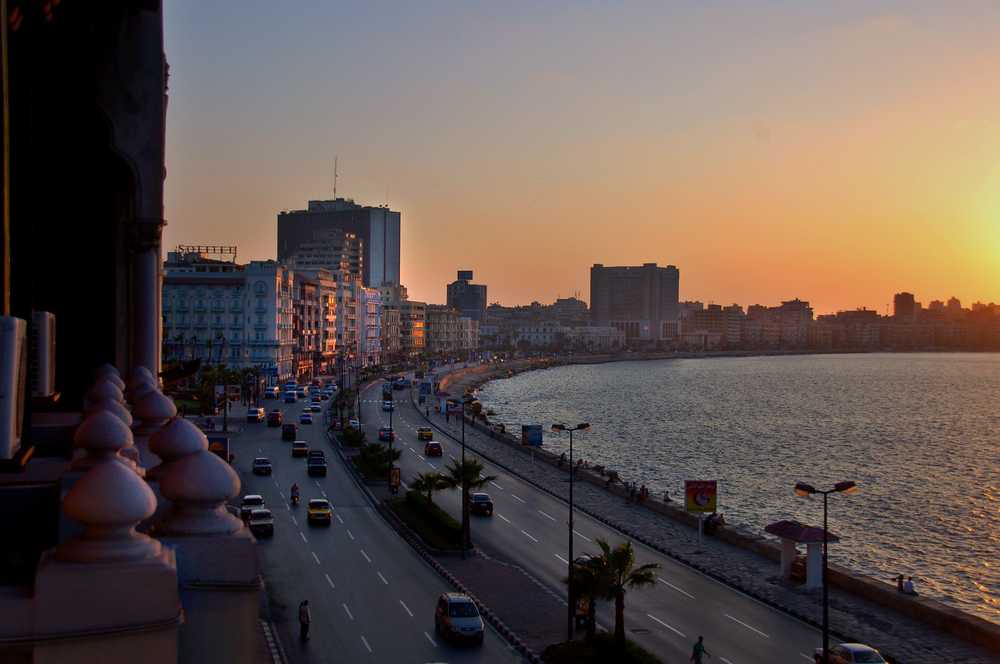
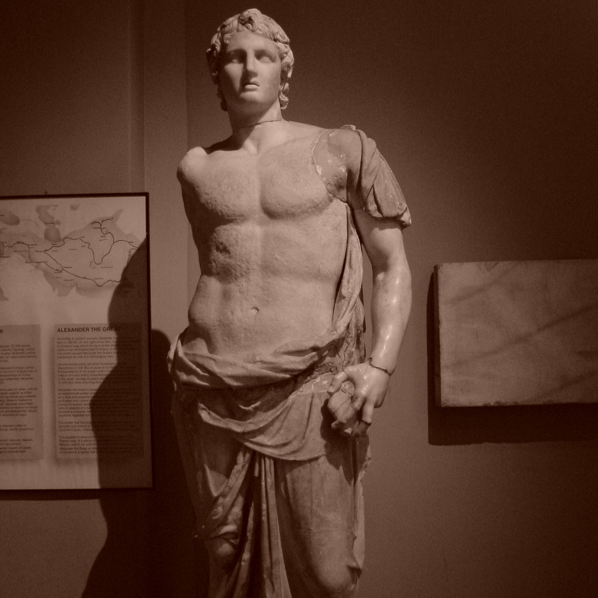
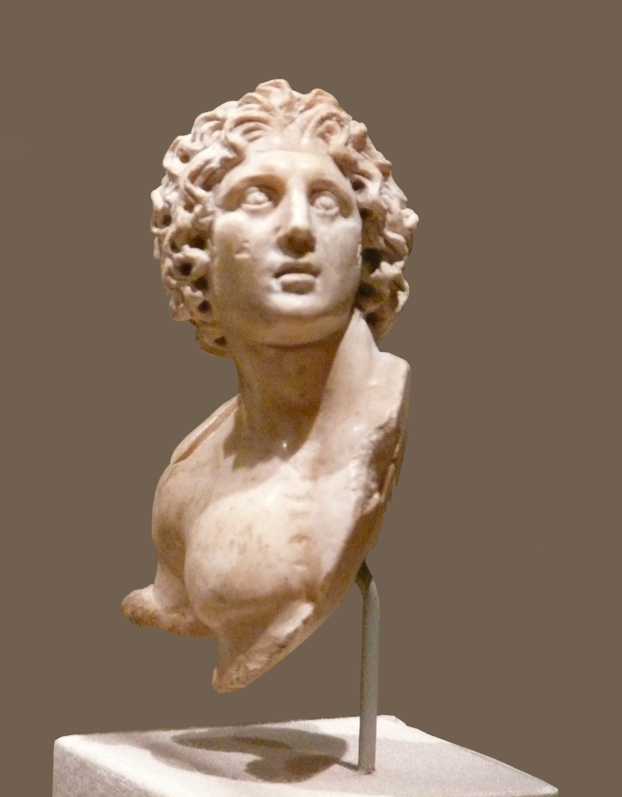

.jpg)
إسْكَنْدَرِيَّة هي العاصمة الثانية لمصر وكانت عاصمتها قديمًا، وهي عاصمة لمحافظة الإسكندرية وأكبر مدنها، تقع على ساحل البحر الأبيض المتوسط بطول حوالي 55 كم شمال غرب دلتا النيل، على مساحة 2679 كم²، يحدها من الشمال البحر المتوسط، ومن الجنوب بحيرة مريوط حتى الكيلو 71 على طريق القاهرة الإسكندرية الصحراوي، ويحدها من جهة الشرق خليج أبو قير ومدينة إدكو، ومن الغرب منطقة سيدي كرير حتى الكيلو 36.30 على الطريق الساحلي الدولي.
تضم الإسكندرية بين طياتها الكثير من المعالم المميزة، إذ يوجد بها أكبر موانئ مصر البحرية (ميناء الإسكندرية وميناء الدخيلة) فتمر بالمدينة نحو 80% من إجمالي الواردات والصادرات المصرية، وتضم أيضًا مكتبة الإسكندرية الجديدة التي تتسع لأكثر من 8 ملايين كتاب، كما يضم العديد من المتاحف مثل متحف الأحياء المائية والمواقع الأثرية مثل قلعة قايتباي وعمود السواري وغيرها، يبلغ عدد سكان الإسكندرية حوالي 4,123,869 نسمة (حسب تعداد 2006) يعملون بالأنشطة التجارية والصناعية والزراعية . تنقسم الإسكندرية إلى تسعة أحياء إدارية هي حي أول المنتزة، حي ثان المنتزة، حي شرق، حي وسط، حي غرب، حي الجمرك، حي العجمي، حي أول العامرية، وحي ثان العامرية
بدأ العمل على إنشاء الإسكندرية على يد الإسكندر الأكبر سنة 332 ق.م عن طريق ردم جزء من المياه يفصل بين جزيرة ممتدة أمام الساحل الرئيسي تدعى "فاروس" بها ميناء عتيق، وقرية صغيرة تدعى "راكتوس" أو "راقودة" يحيط بها قرى صغيرة أخرى تنتشر كذلك ما بين البحر وبحيرة مريوط، واتخذها الإسكندر الأكبر وخلفاؤه عاصمة لمصر لما يقارب ألف سنة، حتى الفتح الإسلامي لمصر على يد عمرو بن العاص سنة 641، اشتهرت الإسكندرية عبر التاريخ من خلال العديد من المعالم مثل مكتبة الإسكندرية القديمة والتي كانت تضم ما يزيد عن 700,000 مجلّد، ومنارة الإسكندرية والتي اعتبرت من عجائب الدنيا السبع، وذلك لارتفاعها الهائل الذي يصل إلى حوالي 120 مترًا، وظلت هذه المنارة قائمة حتى دمرها زلزال قوي سنة 1307
ويرى المؤرخون أن اختيار الإسكندر لمدينة الإسكندرية كي تكون عاصمة لدولته، استهدى في ذلك بتوجيه معلمه الروحي هوميروس في ملحمة "الأوديسة"، حيث ذهب "تليماك" ابن "أودسيوس" ملك إيثاكا، إلى مينيلاوس ملك إسبرطة، يسأله إن كان يعرف شيئا عن مصير والده المختفي، فحكى مينيلاوس عن أهوال الحرب وشجاعة ملك إيثاكا وجيشه المفقود، وأنه بعدما أضنى التعب جيوشهم، بلغوا شواطئ مصر، عند جزيرة فاروس، وهناك كما يقول ملك إسبرطة: "ارتوينا من كوثر هذه البلاد التي تجري من تحتها الأنهار".
تقع مدينة الإسكندرية على ساحل البحر الأبيض المتوسط عند التقاء خط العرض 31° 11' 34.6" شمالاً، وخط الطول 29° 54' 17.5" شرقاً، وهي عبارة عن شريط ساحلي بطول حوالي 55 كم شمال غرب دلتا النيل بدءاً من أبو قير شرقًا وحتى سيدي كرير غربًا، على مساحة 2679 كم²، يحدها من الشمال البحر الأبيض المتوسط، ومن الجنوب بحيرة مريوط حتى الكيلو 71 على طريق القاهرة - الإسكندرية الصحراوي، ومن الشرق خليج أبو قير ومدينة إدكو، ومن الغرب منطقة سيدي كرير حتى الكيلو 36.30 على الطريق الساحلي الدولي، والتربة في مدينة الإسكندرية سهلية منبسطة على ارتفاع -1 من مستوى سطح البحر
 سميت الاسكندريه بهذا الاسم نسبه الي مؤسسها وبانيها الاسكندر الأكبر وقد وقع اختياره عليها لتكون نقطه اتصال بين اليونان ونهر النيل والمهندس الرئيسي للمشروع كان دنوقراطس “دنيوقراط”. قبل ان تبني اسكندريه كان يوجد مكانها قرية صيادين إسمها راكوتيس.
عقب ان خطط الاسكندر اسكندريه خرج من مصر على الشرق و لم يعود مره اخري الي مصر لإنه مات فى ميسوبوتاميا ، و المرجح إن جثمانه اتنقل ليها فى عهد بطليموس الأول و دفن فى اسكندريه فى السوما فى عهد بطليموس التانى .
ولد الإسكندر الأكبر في عام 306 قبل الميلاد، وهو الابن الثاني لفيليبوس من زوجته أولمبياس، والذي سيطر على اليونان بأكملها بعد أن سيطر ووحّد الدويلات المحيطة في عام 338 ق.م، وقد احتل الإسكندر الأكبر عرش اليونان بعد مصرع أبيه في عام 336 ق.م، ودرس الإسكندر العلوم المختلفة على يد الفيلسوف اليوناني أرسطو، مما جعله من أنجح القادة السياسيين، حيث قام خلال حياته بالعديد من الغزوات، وأشهرها غزو الإمبراطورية الفارسية التي كانت تضم آسيا الصغرى والساحل الفينيقيّ ومصر التي كانت ولاية تابعة للإمبراطورية الفارسية، وقد دخلها عام 333 ق.م وأقام فيها مدينة على الشريط الساحلي الرملي الواقع بين البحر المتوسط وبحيرة مريوط، كما أطلق عليها اسم "الإسكندرية". واستمر الإسكندر في غزواته ليحقق خلال حياته القصيرة إنجازات كبيرة إلى أن توفي بمرض الحمّى عام 323 ق.م في مدينة بابل.
 تقع مدينة الإسكندرية على ساحل البحر الأبيض المتوسط عند التقاء خط العرض 31° 11' 34.6" شمالاً، وخط الطول 29° 54' 17.5" شرقاً، وهي عبارة عن شريط ساحلي بطول حوالي 55 كم شمال غرب دلتا النيل بدءاً من أبو قير شرقًا وحتى سيدي كرير غربًا، على مساحة 2679 كم²، يحدها من الشمال البحر الأبيض المتوسط، ومن الجنوب بحيرة مريوط حتى الكيلو 71 على طريق القاهرة - الإسكندرية الصحراوي، ومن الشرق خليج أبو قير ومدينة إدكو، ومن الغرب منطقة سيدي كرير حتى الكيلو 36.30 على الطريق الساحلي الدولي، والتربة في مدينة الإسكندرية سهلية منبسطة على ارتفاع -1 من مستوى سطح البحر.

.jpg)